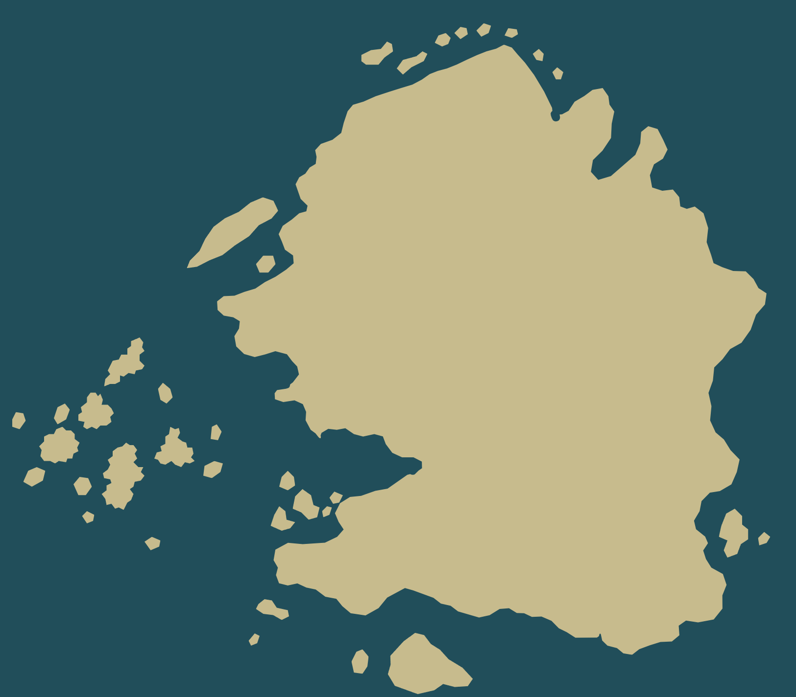
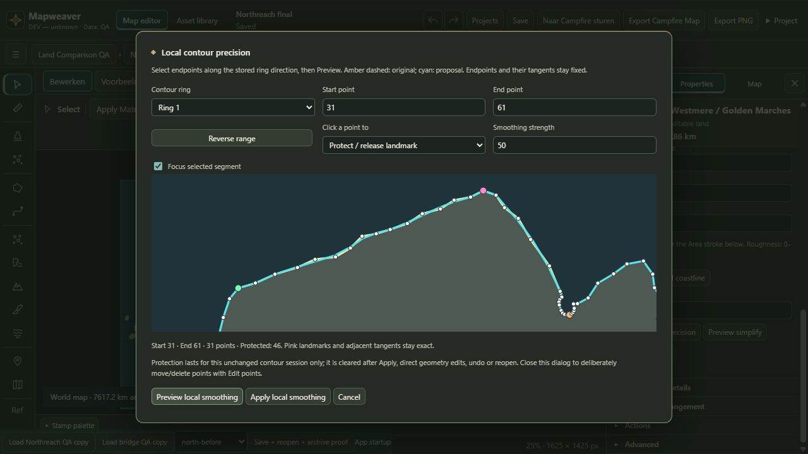
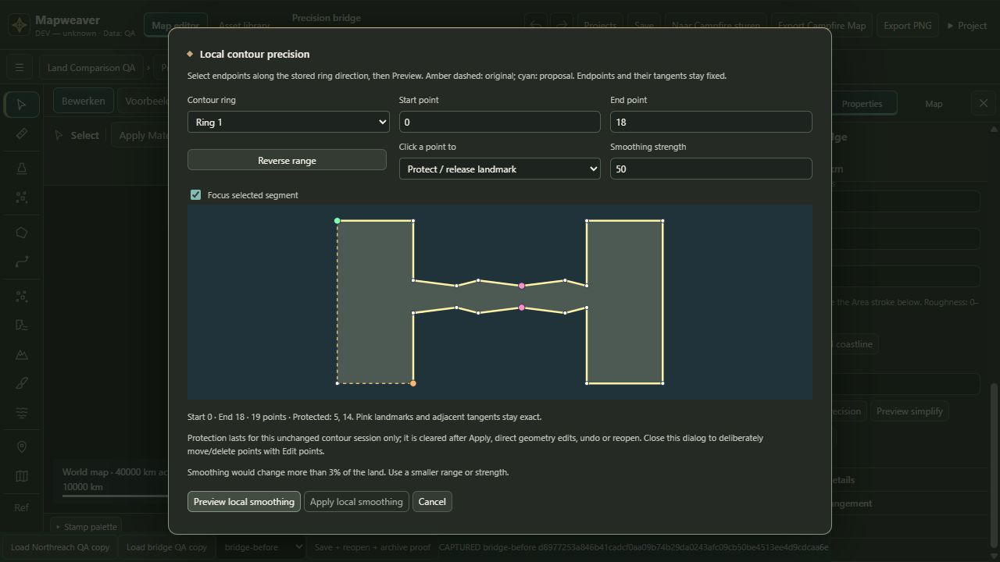
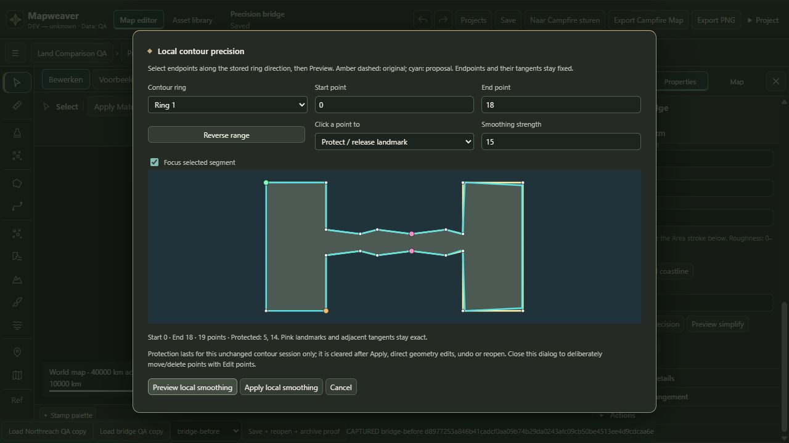
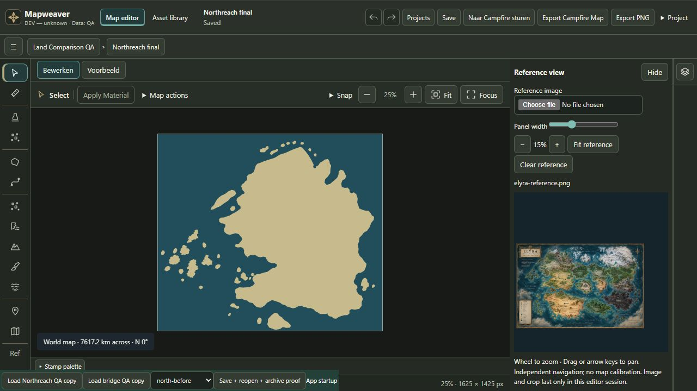

88/88 gerichte tests, typecheck, lint en clientbuild geslaagd. Volledige build: geblokkeerd door canonieke Campfire-contractdrift. Geen Primary-data of contractwijzigingen.
Werkwijze · Architectuur / beperkingen · Testresultaten · Bewerkbare QA-kaart · Native PNG
Deze HTML-uitsneden zijn alleen vergelijkingsbewijs. De PNG-bronnen blijven ongewijzigd. Kaappunt 46 en zijn buren exact; 24 interne vertices aangepast; alle 35 andere Areas exact.





Gekalibreerde koppeling uitgesteld; landmarks zijn sessiegebonden. Geen claim dat de volledige Northreach-kaart premiumkwaliteit bereikt.